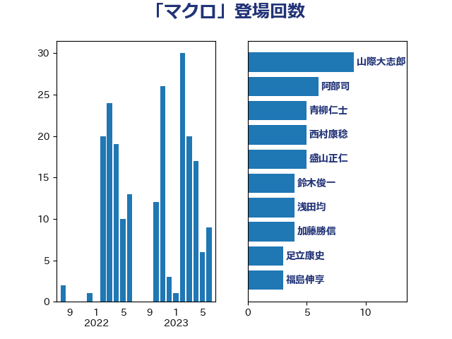

単語「マクロ」

| 田村憲久 | 自由民主党 | 19 回 |
| 西村康稔 | 自由民主党 | 17 回 |
| 山際大志郎 | 自由民主党 | 9 回 |
| 福田達夫 | 自由民主党 | 4 回 |
| 藤田文武 | 日本維新の会 | 4 回 |
| 大島敦 | 立憲民主党 | 3 回 |
| 後藤祐一 | 立憲民主党 | 3 回 |
| 浜地雅一 | 公明党 | 3 回 |
| 足立康史 | 日本維新の会 | 3 回 |
| 阿部司 | 日本維新の会 | 3 回 |
| 上川陽子 | 自由民主党 | 2 回 |
| 今枝宗一郎 | 自由民主党 | 2 回 |
| 伊藤渉 | 公明党 | 2 回 |
| 古賀之士 | 立憲民主党 | 2 回 |
| 宮本徹 | 日本共産党 | 2 回 |
| 末次精一 | 立憲民主党 | 2 回 |
| 枝野幸男 | 立憲民主党 | 2 回 |
| 柚木道義 | 立憲民主党 | 2 回 |
| 浅田均 | 日本維新の会 | 2 回 |
| 落合貴之 | 立憲民主党 | 2 回 |
| 西岡秀子 | 国民民主党 | 2 回 |
| 足立敏之 | 自由民主党 | 2 回 |
| 里見隆治 | 公明党 | 2 回 |
| 野田聖子 | 自由民主党 | 2 回 |
| 金村龍那 | 日本維新の会 | 2 回 |
| 麻生太郎 | 自由民主党 | 2 回 |
| 齋藤健 | 自由民主党 | 2 回 |
| 中川正春 | 立憲民主党 | 1 回 |
| 中西健治 | 自由民主党 | 1 回 |
| 中野洋昌 | 公明党 | 1 回 |
| 伊藤孝恵 | 国民民主党 | 1 回 |
| 佐藤英道 | 公明党 | 1 回 |
| 倉林明子 | 日本共産党 | 1 回 |
| 前原誠司 | 国民民主党 | 1 回 |
| 勝目康 | 自由民主党 | 1 回 |
| 守島正 | 日本維新の会 | 1 回 |
| 宗清皇一 | 自由民主党 | 1 回 |
| 宮路拓馬 | 自由民主党 | 1 回 |
| 山岸一生 | 立憲民主党 | 1 回 |
| 山田賢司 | 自由民主党 | 1 回 |
| 岸田文雄 | 自由民主党 | 1 回 |
| 後藤茂之 | 自由民主党 | 1 回 |
| 打越さく良 | 立憲民主党 | 1 回 |
| 本庄知史 | 立憲民主党 | 1 回 |
| 本村伸子 | 日本共産党 | 1 回 |
| 杉久武 | 公明党 | 1 回 |
| 村井英樹 | 自由民主党 | 1 回 |
| 林芳正 | 自由民主党 | 1 回 |
| 梶山弘志 | 自由民主党 | 1 回 |
| 森屋宏 | 自由民主党 | 1 回 |
| 武村展英 | 自由民主党 | 1 回 |
| 武見敬三 | 自由民主党 | 1 回 |
| 河西宏一 | 公明党 | 1 回 |
| 泉田裕彦 | 自由民主党 | 1 回 |
| 浅野哲 | 国民民主党 | 1 回 |
| 牧山ひろえ | 立憲民主党 | 1 回 |
| 玉木雄一郎 | 国民民主党 | 1 回 |
| 田島麻衣子 | 立憲民主党 | 1 回 |
| 礒崎哲史 | 国民民主党 | 1 回 |
| 菅義偉 | 自由民主党 | 1 回 |
| 蓮舫 | 立憲民主党 | 1 回 |
| 西田実仁 | 公明党 | 1 回 |
| 谷公一 | 自由民主党 | 1 回 |
| 赤羽一嘉 | 公明党 | 1 回 |
| 鈴木英敬 | 自由民主党 | 1 回 |
| 長妻昭 | 立憲民主党 | 1 回 |
| 長谷川淳二 | 自由民主党 | 1 回 |
| 階猛 | 立憲民主党 | 1 回 |
| 青山周平 | 自由民主党 | 1 回 |
| 音喜多駿 | 日本維新の会 | 1 回 |
| 高橋はるみ | 自由民主党 | 1 回 |
| 高野光二郎 | 自由民主党 | 1 回 |
| 黄川田仁志 | 自由民主党 | 1 回 |